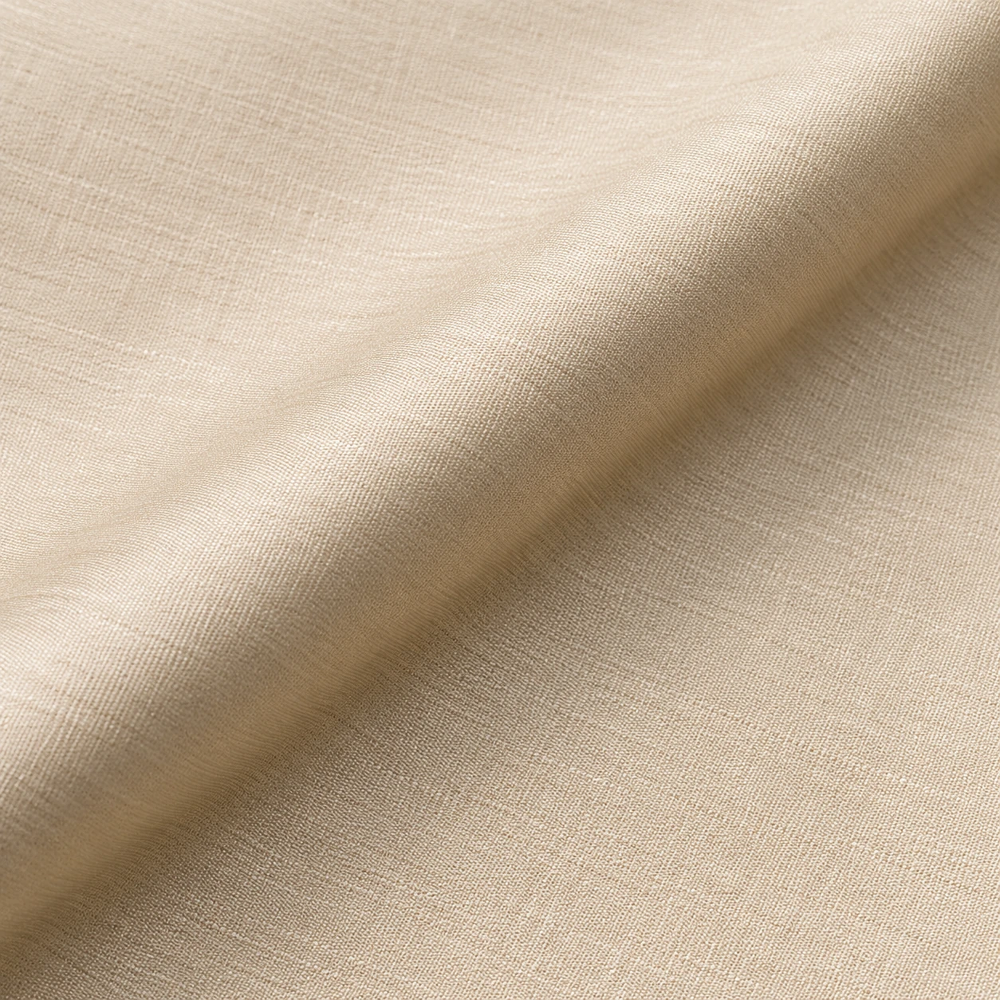

The idea / LOOMZ
Form follows feeling.
Traditional cloth selection through colour, surface and personal proportion.
The approach
What a cloth becomes is shaped by who wears it.
The original LOOMZ visual language is deliberately spare: dark space, finely weighted typography and material held close to the eye. Here it is redirected toward unstitched cloth for traditional Pakistani attire.
The two edits make room for ordinary wear and for texture or occasion. Tailoring connects both to the person's measurements, preference and intended use.

The material
Look closer,
then choose.
Macro imagery reveals an intended surface. A real order still needs physical stock inspection and a clear specification.
Explore the guide ↗Two edits
Twenty directions.
A coherent starting range that spans light plain weaves, smooth surfaces and pronounced figured textures.
One next step
Your own cut.
Choose the cloth and discuss the garment in a brief that can be carried into a real consultation.
Prepare an inquiry ↗